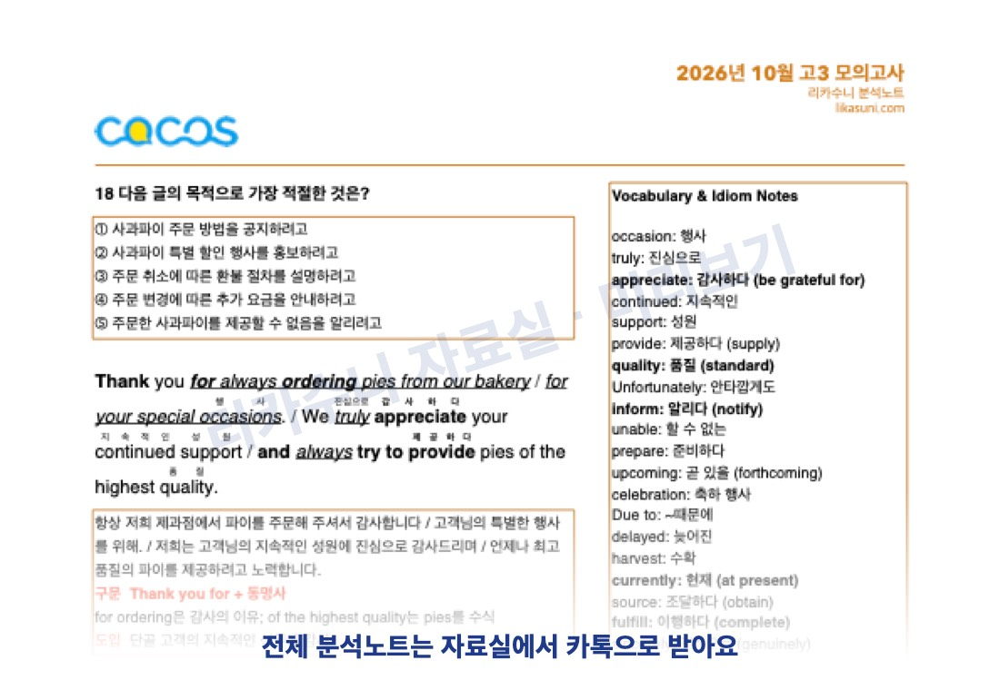

안녕하세요, 이매동 코코스학원 리카수니 원장입니다.
학생 요청으로 2026년 10월 고3 영어 모의고사 18번 분석노트를 만들었어요.
시험지를 옆에 펴 놓고 보시면 더 잘 보여요.
· 시험: 2026년 10월 고3 전국연합학력평가 영어
· 번호: 18번 (글의 목적)
· 정답: ⑤ 주문한 사과파이를 제공할 수 없음을 알리려고
제과점이 단골 고객에게 보내는 편지예요.
감사 인사로 시작한 뒤, 이번 철 사과 수확이 늦어져 신선한 사과를 구하기 어려워서 생일 축하용으로 주문한 사과파이를 만들 수 없다고 알리고 사과하는 흐름이에요.
· 도입: 항상 주문해 주셔서 감사하다는 인사 → 목적이 아니라 분위기 잡기예요.
· 전환: Unfortunately, we are writing to inform you that ~ 뒤에 진짜 목적이 나와요.
· 원인: 사과 수확 지연 → 신선한 사과 조달의 어려움
· 결과: As a result, 주문을 이행할 수 없다고 다시 확인해요.
→ '주문한 사과파이를 제공할 수 없음을 알리려고' ⑤가 정답이에요.
①·② → 주문 방법 공지나 할인 홍보는 글에 없어요.
③ → '주문 취소·환불 절차' 설명은 없어요. 주문을 못 받는다는 알림뿐이에요.
④ → '주문 변경·추가 요금' 이야기도 없어요.
목적 문제는 Unfortunately, However 같은 전환어 뒤를 먼저 보세요.

1) Thank you for + 동명사
→ Thank you for always ordering pies (항상 파이를 주문해 주셔서 감사합니다)
2) inform A that ~ / 목적어를 꾸미는 관계절
→ inform you that we are unable to prepare the apple pie you've ordered
3) experience difficulties (in) -ing
→ experiencing difficulties sourcing fresh apples (신선한 사과를 조달하는 데 어려움을 겪다)
4) look forward to + 동명사 (to 는 전치사)
→ look forward to serving you again
· occasion 행사
· appreciate 감사하다
· continued support 지속적인 성원
· quality 품질
· inform 알리다
· unable 할 수 없는
· upcoming 곧 있을
· due to ~ 때문에
· delayed 늦어진 / harvest 수확
· currently 현재
· source 조달하다
· fulfill 이행하다
· sincerely 진심으로 / apologize 사과하다
분석노트 PDF 에 '서술형 대비 한 문장'(prevent A from -ing)과 영어 핵심 요약(Core Summary)을 해석과 함께 정리해 두었어요.
자료실에서 이 문항 분석노트를 전자책으로 바로 볼 수 있어요.
인쇄용 PDF 는 카카오 로그인 후 카톡으로 받을 수 있고, 같은 회차 다른 번호도 요청할 수 있어요.
▶ 2026년 10월 고3 영어 자료 보기
https://data.likasuni.com/moe/go3/2026-10/eng/
분당 이매동 코코스학원은 초등·중등·고등 영어와 수학을 가르쳐요.
모의고사·수능특강·내신 대비가 궁금하시면 편하게 문의해 주세요.
· 홈페이지: https://www.cocosedu.co.kr/
· 주소: 경기 성남시 분당구 판교로 476 2층